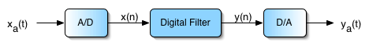

Lab 2 - Audio Filtering
Summary
In this lab, you will learn how to design FIR notch filters to specification using Python and how to implement filters efficiently in Android.
Downloads
Python
Part 1 - Filter Generation
Filter design in Python is very similar to filter design in MATLAB. SciPy has a Signal Processing library that contains built-in code for convolution, spline interpolation, filtering and filter design, as well as other signal analysis. If you are looking for a DSP function that exists in MATLAB, this library should be the first place you check.
In particular, we will be looking at scipy.signal.firls for our FIR filter design. Your task will be to generate the coefficients for a bandstop filter with the given specifications:
- Frequencies between 1KHz and 2KHz should be attenuated to approximately -20dB or less.
- All other frequencies should pass through with approximately unity gain.
- Assume a sampling rate of 48kHz.
Our final goal with this filter will be to allow speech through with no attenuation but suppress pure sine tones between 1KHz and 2KHz. Some things to think about:
- You can design any filter if you allow the filter order to go to infinity. What are the practical considerations to using a longer filter?
- The sharper the transition bands, the larger the ripple in the passband. We've defined a relatively narrow stopband. How wide can you make the transition bands while still meeting your application's requirements?
Assignment
Generate an FIR filter using scipy.signal.firls(). Sample code start you off and display the frequency response is given below.
Show your TA when your filter design is done. Defend your design decisions regarding points 1 and 2 from above.
Skeleton Python code shown below. Feel free to modify it as you see fit.
import numpy as np import matplotlib.pyplot as plt from scipy import signal # Your filter design here # firls() can be called via signal.firls() b = ?? # Signal analysis w, h = signal.freqz(b) plt.figure() plt.subplot(2,1,1) plt.title('Digital filter frequency response, N = ' + str(len(b))) plt.plot(w / np.pi, 20 * np.log10(abs(h)), 'b') plt.ylabel('Amplitude [dB]', color='b') plt.grid() plt.axis('tight') plt.subplot(2,1,2) angles = np.unwrap(np.angle(h)) plt.plot(w / np.pi, angles, 'g') plt.ylabel('Angle (radians)', color='g') plt.grid() plt.axis('tight') plt.xlabel('Frequency [0 to Nyquist Hz, normalized]') plt.show()
Part 2 - FIR Filter
Now that you have your filter coefficients, you will implement your filter in Python and test it on sample data. This prototyping stage is to get you comfortable with actually using a filter before implementing it on Android, which is significantly more difficult to debug. Your filtering code should only be a few lines long. Do not use any scipy.signal functions such as lfilt to compute the filtered output.
Assignment
Implement the filter designed in Part 1. Test your filter on the time_domain signal test_data given below and plot the time domain result.
Show your TA when you are done.
Python test code:
import numpy as np import matplotlib.pyplot as plt from scipy import signal F_s = 48000 t = [i / F_s for i in range(2 * F_s)] test_data = signal.chirp(t, 1, t[-1], 24000, method='logarithmic') # ... filter ...
The following code may be used to convert a Python array of coefficients to a static C++ array initialization:
a = [1, 2, 3, 4, 5, 6] coef_str = "float coefs[] = {" for val in a: coef_str += str(val) + ", " coef_str = coef_str[:-2] coef_str += "};" print(coef_str)
Android
Part 3 - OpenSL ES
Background
If you've worked with Android before, you may wonder why we're using the NDK for our audio transactions. An example of Java's audio recording callflow taken from this StackOverflow post is given below:
private void startRecording() { recorder = new AudioRecord(MediaRecorder.AudioSource.MIC, RECORDER_SAMPLERATE, RECORDER_CHANNELS, RECORDER_AUDIO_ENCODING, BufferElements2Rec * BytesPerElement); recorder.startRecording(); isRecording = true; recordingThread = new Thread(new Runnable() { public void run() { writeAudioDataToFile(); } }, "AudioRecorder Thread"); recordingThread.start(); }
In the code above, we first initialize a new AudioRecord instance containing all of our recording parameters, such as sampling rate, mono or stereo, encoding format, and number of elements in the audio buffer. We tell the AudioRecord instance to begin sampling the microphone and storing data in the buffer, then we launch a thread to monitor the buffer and extract samples when it is full (not shown).
The problem with this approach is the latency. Android has a longstanding problem implementing low-latency audio solutions compared to iOS. As of Q1 2015, this was reflected in the disproportionate number of music apps available for Android versus iOS. At a high level, Android requires large sampling buffers to be filled before the data can be read. Compare this to the last lab -- it would be as if you could only read sensor data every N samples versus every sample. For the Java implementation given above, the minimum recording and playback buffer sizes result in about 200ms round-trip delay (RTD).
Android has made great strides in low-latency audio in the last few years, however. They have introduced a low-latency pipeline accessible in the NDK that operates on the OpenSL ES framework, a standardized embedded audio API. If you use the device's default sampling rate and buffer size, it will utilize the Fast Mixer thread.
Use of the Android Fast Audio Path is taken care of for you in this lab, but the idea of tradeoffs between latency and buffer size is a fundamental concept in embedded audio.
Note
If this is a topic that interests you, there's a ~45 minute Google I/O talk that discusses the changes they've made in the last couple years to bring their latency down.
Code Structure
All of your audio labs will be based on Android's Audio-Echo NDK sample. The Java side of this application should look similar to Lab 1, except instead of your button.onClickListener() being defined programmatically during onCreate(), it is defined in app/res/layout/activity_main.xml directly as below:
<Button android:id="@+id/button_start_capture" android:layout_width="wrap_content" android:layout_height="wrap_content" android:text="@string/StartEcho" android:onClick="startEcho" />
Notice the field android:onClick="startEcho". This says that when the Start button is clicked, the function startEcho() in MainActivity.java is called. Likewise, the same goes for stopEcho(). The most significant change between Lab 1 and Lab 2 is the introduction of the NDK. If you scroll to the bottom of MainActivity.java, you will see a host of unimplemented functions:
/* * jni function implementations... */ public static native void createSLEngine(int rate, int framesPerBuf); public static native void deleteSLEngine(); public static native boolean createSLBufferQueueAudioPlayer(); public static native void deleteSLBufferQueueAudioPlayer(); public static native boolean createAudioRecorder(); public static native void deleteAudioRecorder(); public static native void startPlay(); public static native void stopPlay();
These functions are defined through JNI, the Java Native Interface. The JNI provides a nice way for Java to interact with functions defined in C++ using the NDK. Without going into specifics, let's take a look at what these function declarations look like in C++. Open the file app/cpp/audio_main.cpp and scroll to line 50:
JNIEXPORT void JNICALL Java_com_ece420_lab2_MainActivity_createSLEngine(JNIEnv *env, jclass, jint, jint);
Here we have the other side of the JNI. The function arguments contain two pointers referring back to the Java environment, then our two expected int arguments.
Note
You shouldn't have to modify any of the JNI-specific code. This is provided for reference.
Your responsibility will be to fill in the function ece420ProcessFrame(sample_buf *dataBuf) in ece420_main.cpp, which gets called every time the the microphone fills its N-sample buffer. This has the same effect as the Digital Filter block in the image below:

On completion of ece420ProcessFrame(), anything inside dataBuf will be written out to the speaker (the D/A) and played. You will have to process the incoming audio data in dataBuf and overwrite the old data with your processed data to play your filtered audio.
Part 4 - PCM-16 Decoding
Your audio data will come from OpenSL as a buffer of 128 PCM-16 encoded samples. From Wikipedia:
Pulse-code modulation (PCM) is a method used to digitally represent sampled analog signals. It is the standard form of digital audio in computers, compact discs, digital telephony and other digital audio applications. In a PCM stream, the amplitude of the analog signal is sampled regularly at uniform intervals, and each sample is quantized to the nearest value within a range of digital steps.
Your first task in Android will be to decode this data into usable int16_t data and then back to byte-packed data. If you view the declaration for sample_buf (right click -> Go To -> Declaration), you can see that sample_buf consists of the following:
struct sample_buf { uint8_t *buf_; // audio sample container uint32_t cap_; // buffer capacity in byte uint32_t size_; // audio sample size (n buf) in byte };
The data is stored as as a uint8_t array of size 2*N. OpenSL uses little endian byte order, meaning that the least significant byte is stored in the lower index of the array.
Assignment
Convert the PCM-16 data in dataBuf to int16_t and write the output to bufferIn. Also convert bufferOut to PCM-16 data and write the output back into dataBuf for the OpenSL player to read.
You can verify that your conversion is correct by placing a breakpoint at the end of ece420ProcessFrame() and comparing the byte values in buf_ to the values in your int16_t array as below. Keep in mind that these values can be negative.

To view the buffer byte values in hex instead of char, type the following in the LLDB tab in your debugging window:
(lldb) type format add -f x uint8_t
Part 5 - FIR Filter
Now that you have usable data in the form of int16_t, you will implement the FIR filter you designed earlier in Python. For the sake of performance, you will be using a fixed-sized array to hold the past-sample buffer required for an FIR filter such as
The most efficient way to manage a fixed-sized array is using a circular buffer. Circular buffers maintain an index of the most recent sample and insert new data at mod(idx + 1, N), where N is the length of your array. For a length 5 array, successive data input would look as follows:
n = 0: {0, 1, 2, 3, 4}
n = 1: {5, 1, 2, 3, 4}
n = 2: {5, 6, 2, 3, 4}
n = 3: {5, 6, 7, 3, 4}
n = 4: {5, 6, 7, 8, 4}
n = 5: {5, 6, 7, 8, 9}
Warning
You may not use bufferIn directly to access prior samples for etc. This constraint will be lifted in the next lab when we begin discussing batch processing, but for now, we will avoid the boundary issues that arise when doing frame-by-frame processing.
Code that emulates sample-by-sample processing is given in the source code and replicated below:
// Loop code provided as a suggestion. // This loop simulates sample-by-sample processing. for (int sampleIdx = 0; sampleIdx < dataBuf->size_; sampleIdx++) { int16_t sample = bufferIn[sampleIdx]; // Your function implementation int16_t output = firFilter(sample); bufferOut[sampleIdx] = output; }
Assignment
Implement the function int16_t firFilter(int16_t sample) to process data on a sample-by-sample basis. Sample history must be maintained using a circular buffer or some other Queue implementation.
The final result should be a real-time notch filter that listens over the microphone and attenuates frequencies around 1KHz, outputting the filtered data over the speakers. You can verify your results by playing a sine sweep into your tablet's microphone and listening to see if frequencies around 1KHz are attenuated.
Part 6 - IIR Filter (Extra Credit)
For 1 point of extra credit, design and implement an IIR filter in Android that meets the same specifications as your FIR filter.
Grading
Your lab will be graded as follows:
- Prelab (2 points)
- Lab (4 points)
- Quiz (2 points)
- Extra credit (+1 point)